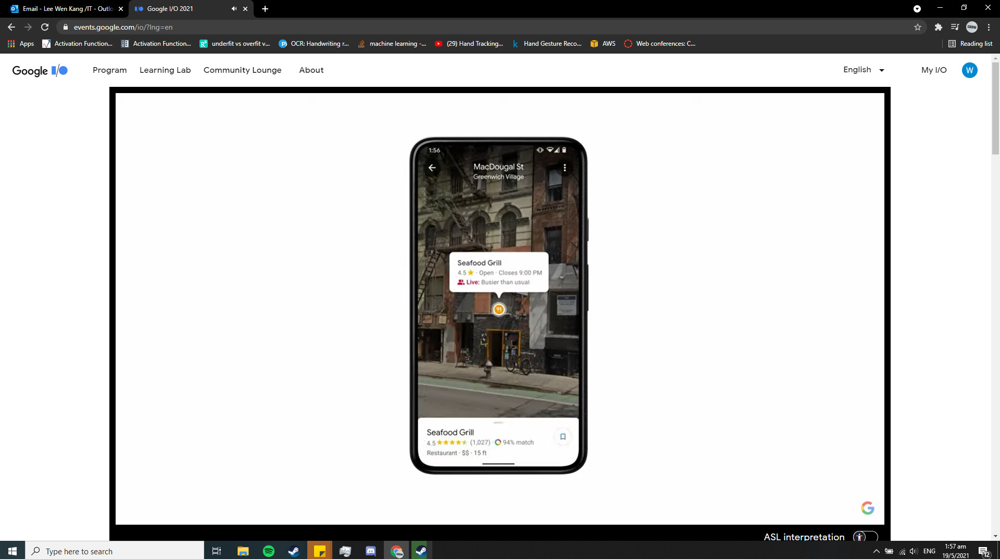
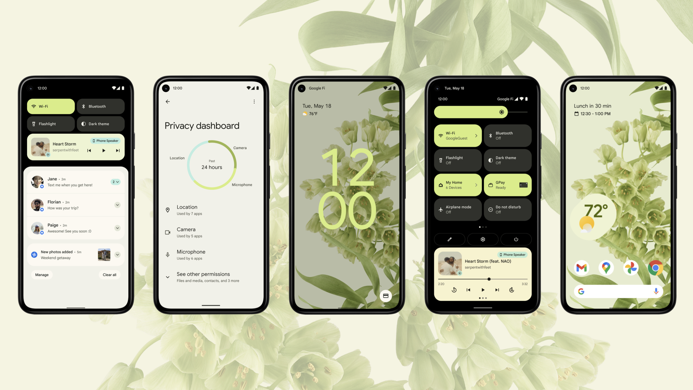
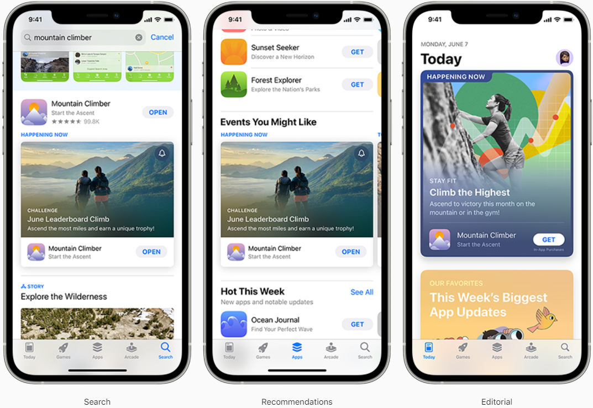

Industry Engagement
Introduction
In this project, I attended Google I/O and Apple WWDC21. This was to keep up with the recent improvements to
products and services that will be released by Apple and Google. What is Google I/O and WWDC21?
Google I/O is an annual international event hosted by Google to connect developers from all around the
world. They conduct keynotes, discussions, workshops, Ask Me Anything (AMA) sessions with an aim to announce
new products, services and improvements. While Apple Worldwide Developers Conference (WWDC) is an annual
even held by Apple. Apple is a multinational
technology company that is known for their computers (MAC), mobile phones (iPhone), iOS operating system,
etc. WWDC hosts events that reveals new products and improvements in the Apple platforms and products, to
allow developers to connect with each other and catch up with new Apple technologies.
One takeaway from Google I/O

In Android 12, Google is releasing Material You. Material You builds on Material Design, which is a design
system created by Google to help build consistent
and high-quality User Interface / User Experience (UI/UX) for mobile and web applications. Material You
personalises the colour of its user’s widgets, buttons and texts by using the user’s wallpaper to derive a
colour pallet that suits the mood and feel of the wallpaper. In addition, Material You shares this colour
pallets with other applications so that every application can be uniquely coloured.
One takeaway from Apple WWDC21

In Android 12, Google is releasing Material You. Material You builds on Material Design, which is a design
system created by Google to help build consistent
and high-quality User Interface / User Experience (UI/UX) for mobile and web applications. Material You
personalises the colour of its user’s widgets, buttons and texts by using the user’s wallpaper to derive a
colour pallet that suits the mood and feel of the wallpaper. In addition, Material You shares this colour
pallets with other applications so that every application can be uniquely coloured.
Impact of Events on future goals
After going through these industry talks and events, I have learnt a lot more about the industry. I now
understand what features and service are important to customers, and what are the new features to look
forward to. Through these events, I have come to realise that I have learnt a lot more about kinds of
features and services technology firms are trying to improve and release. I also have several key takeaways
from these events that have impacted how I view the information technology industry and my future goals.
Privacy is one big take away from the Google I/O and WWDC21 event. In these events, both Apple and Google
announced improvements to their customers privacy where they both introduced privacy dashboards. A privacy
dashboard is an app or page where users can see which permissions were used by apps. As these technology
companies are putting a lot effort into improvement on user privacy, this means that user privacy is a high
priority for users as it allows users to feel safe while using their devices.
In both Google I/O and WWDC21 keynotes, Apple and Google announced 3d rendering to their Maps. This allows
their
maps to display buildings in 3d and render objects onto the map itself. These improvements can help
developers
re-imagine how they can use maps in their applications. For example, developer can now render 3d objects
onto
maps like Pokestops in Pokémon GO without developing a whole new map system. By looking at the recent
improvements in maps, I am very optimistic about future of maps and I look forward to making applications
with
the new features.
Conclusion
To conclude, throughout this assignment, I have attended several industry talks and events such as Google
I/O and Apple WWDC21. These events have made me realise that attending these talks are very important as it
allows me to keep up with the ever-evolving industry. In addition, these talks also allows me to reflect on
what I have been learning in school and allows me to think of more innovative ideas for programming
assignments.
Thinking back, before this assignment, I do not usually attend these kinds events frequently. As a result, I
would normally be oblivious to news regarding the technology industry such as new Android versions or
changes in iOS. However, after this assignment, I will make an effort to attend these talks especially
future Google I/O and Apple WWDC events as they are very meaningful and interesting to me.